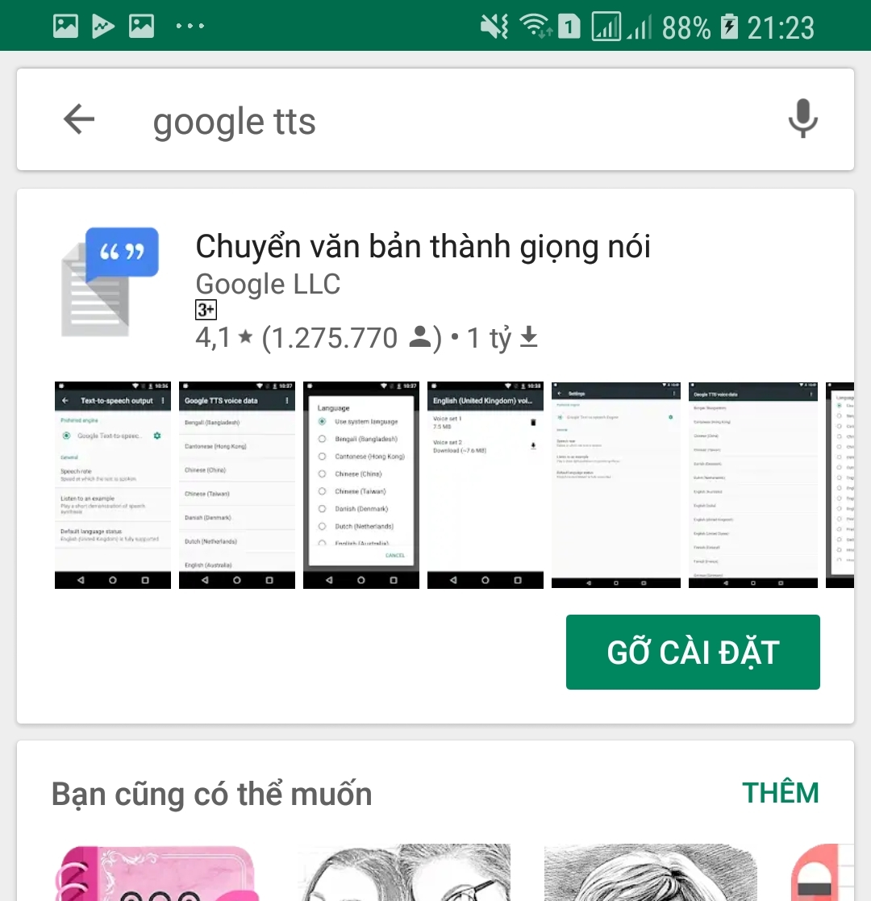
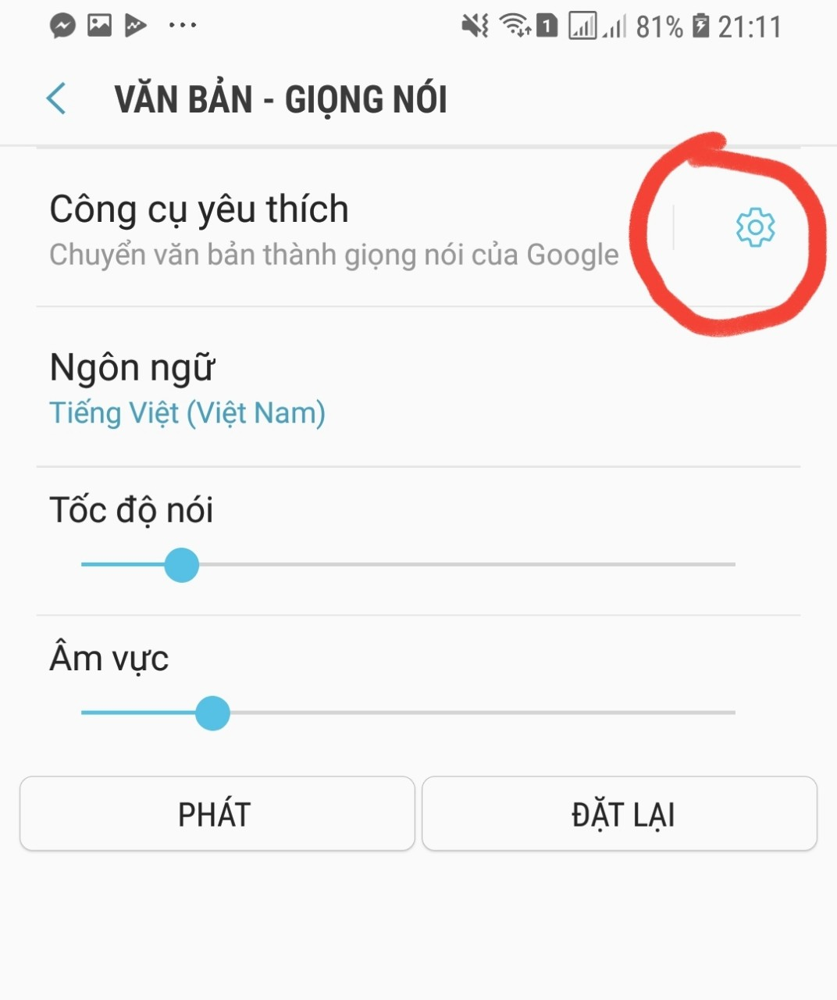

Hướng dẫn khắc phục
- Bước 1: Lên cửa hàng Play Store, tìm từ khóa Google TTS để cài đặt hoặc cập nhật ứng dụng Chuyển văn bản thành giọng nói của Google

- Bước 2:Vào màn hình cài đặt Văn Bản Thành Giọng Nói bằng các thao tác sau:
- Đối với máy Oppo: Cài đặt -> Cài đặt bổ sung -> Khả năng truy cập -> Đầu ra văn bản thành giọng nói
- Đối với máy Samsung: Cài đặt -> Hổ trợ -> Văn bản - Giọng nói
- Bước 3: Bấm vào icon răng cưa giống hình bên dưới

- Bước 4: Cài đặt dữ liệu thoại -> Kéo xuống chọn Tiếng Việt để nó cài đặt là xong
Nếu bạn vẫn chưa làm được, hãy liên hệ mình để hổ trợ: